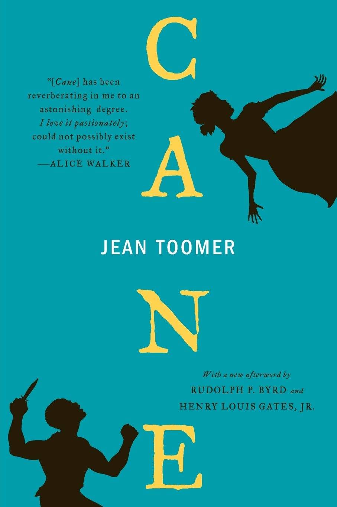
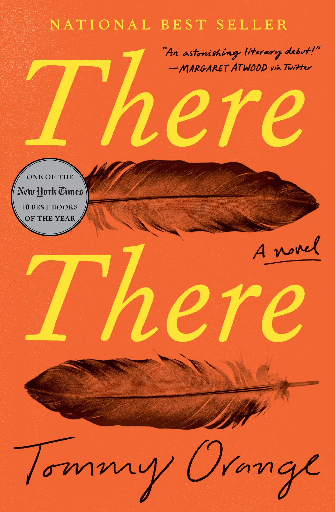
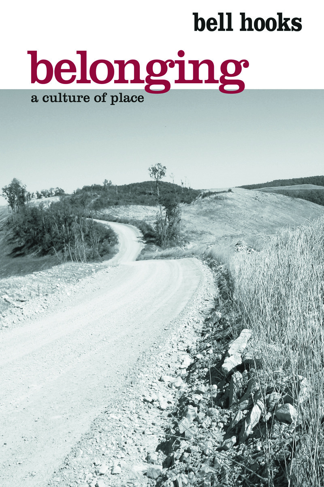

Cane
Here, you can revisit the book Cane by Jean Toomer. "A poet, playwright, and novelist, Toomer’s most famous work, Cane, was published in 1923 and was hailed by critics for its literary experimentation and portrayal of African-American characters and culture" - Poetry Foundation

There There
Here, you can revisit the book There There by Tommy Orange. Published in 2018, There There by Tommy Orange explores what it means to be Native American in the 21st Century

Belonging: A Culture of Place
Here, you can revisit Belonging: A Culture of Placeby bell hooks. hooks explores what it means to be 'from' somewhere, what it means to call a place home, and what it means to truly belong.
